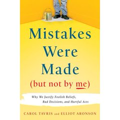
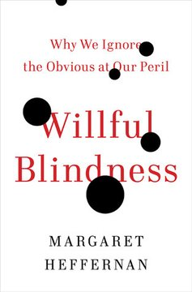
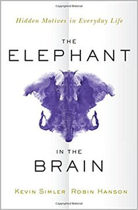

Módulo 03 / Apartado 4 de 5
El autoengaño
Por qué mentirse sale a cuenta, y por qué eso significa que más información no lo arregla.
La pregunta que hay debajo
Engañarse a uno mismo es raro si lo piensas. Mentir a otro tiene una ventaja evidente. Mentirte a ti no parece que te dé nada, y encima te deja peor equipado para decidir. ¿Por qué lo hacemos entonces, y tanto?
La respuesta más potente que hay la dio un biólogo evolutivo, y es tan incómoda que cuesta un rato aceptarla.
La tesis de Trivers
Robert Trivers es uno de los biólogos evolutivos más importantes del siglo XX, y su tesis en The Folly of Fools es esta: nos engañamos a nosotros mismos para engañar mejor a los demás.
Mentir deja rastro. Micro-expresiones, dudas al hablar, esfuerzo cognitivo que se nota. Y como todos mentimos, hemos desarrollado también detectores bastante buenos para pillar a los demás.
Con lo cual mentir bien es caro. La solución elegante, desde el punto de vista evolutivo, es quitar la mentira de la conciencia: si tú te crees lo que dices, no hay rastro que detectar. Ya no estás mintiendo, estás equivocado con absoluta sinceridad, y eso es infinitamente más convincente.
El autoengaño no es un fallo del sistema. Es una función.
La versión con dos personas: Tavris y Aronson
Si Trivers explica el mecanismo, Mistakes Were Made (But Not by Me) explica el procedimiento, y es el libro más útil de este apartado para el trabajo.
Es la incomodidad que sientes cuando dos cosas que crees no encajan. Por ejemplo: «soy buen profesional» y «he tomado una decisión que ha costado dos millones».
Esa incomodidad se puede resolver de dos maneras. Cambiando la creencia sobre ti mismo, que duele mucho, o cambiando la historia sobre lo que pasó, que no duele nada. Y adivina cuál elegimos casi siempre.
Lo que describen Tavris y Aronson es que ese ajuste ocurre sin que te enteres, y en pasos pequeños. Nadie decide mentirse. Simplemente, cada vez que cuentas la historia, va quedando un poco mejor.
La imagen que usan es una pirámide. Dos personas empiezan casi en el mismo sitio, con una decisión pequeña y distinta. A medida que cada una justifica la suya, se van separando por las laderas, y al final están en extremos opuestos y las dos convencidas de haber sido coherentes desde el principio.
La versión organización: la ceguera voluntaria
Lo mismo, pero cuando lo hace una empresa entera. Margaret Heffernan lo llama ceguera voluntaria, un término que viene del derecho: en muchos sistemas legales, no querer saber algo no te exime de responsabilidad, precisamente porque no querer saber es una decisión.
Y aquí está lo que hay que llevarse a una defensa: en casi todos los desastres corporativos que se estudian después, había gente dentro que lo sabía. No falló la información. Falló que llegara a un sitio donde alguien pudiera hacer algo, y que hubiera alguien dispuesto a mirarla.
Que es la primera señal de mala estrategia de Rumelt, en el módulo 2, vista desde abajo: no afrontar el problema no es que no lo veas. Es un acuerdo tácito de no mencionarlo.
Consecuencia práctica y desagradable. Si un autoengaño cumple una función, entonces poner más datos encima de la mesa no lo desmonta. Es la explicación de algo que en el módulo 1 salía como frase suelta: hay gente que prefiere quebrar a cambiar. No les falta el informe. Les sobra el motivo para no leerlo.
Fuentes de este apartado
Las turras de las que sale
La turra del apartado, y la que cita a Trivers directamente. No tiene tarjeta generada en el repositorio, pero el hilo está completo en el Turrero.
El cuerpo calloso y el test AstudilloTurra · 45 tweetsCita a Tavris y Aronson, y va de trabajar con los dos hemisferios. Su parte más aprovechable aquí: la manía del capital riesgo con los negocios que dependen del factor humano, porque no los saben medir. Que es el escalón cuatro de McNamara aplicado a invertir.
Truth coping: cómo sobrevivir a verdades incómodasTurra · recienteVa justo del problema práctico que deja este apartado: qué haces cuando la verdad que necesitas contar es una que el otro no puede sostener todavía. Sin tarjeta en el repositorio.
Los libros
La tesis de que nos engañamos para engañar mejor, desarrollada con biología evolutiva. Denso y con digresiones, y aun así es la fuente. Si quieres la idea sin el libro, la tienes entera en el diagrama de arriba.

Mistakes Were Made (But Not by Me)Tavris y Aronson · 2007El más práctico del apartado. Explica la disonancia cognitiva y la pirámide de la autojustificación con casos de médicos, policías, jueces y matrimonios. Se lee fácil y te deja incómodo, que es lo que se busca.

Willful BlindnessMargaret Heffernan · 2011La versión organizativa, con el concepto jurídico de ceguera voluntaria como eje. Repasa desastres donde alguien dentro sabía. Es el libro que conviene tener leído antes de escribir el diagnóstico de un caso real.

The Elephant in the BrainSimler y Hanson · 2017Sostiene que buena parte de nuestro comportamiento tiene motivos ocultos incluso para nosotros mismos, y que las instituciones están montadas sobre eso. Es Trivers escalado a sociedad entera, y encaja con la crítica a la Administración del módulo 1.